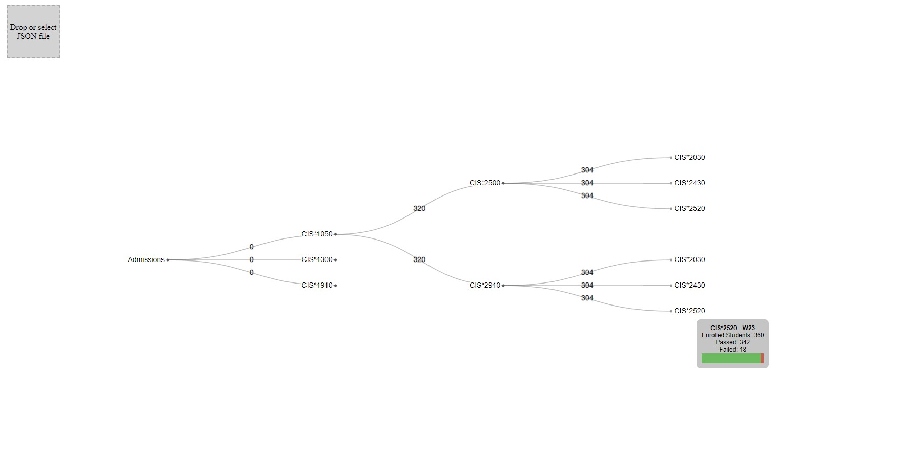
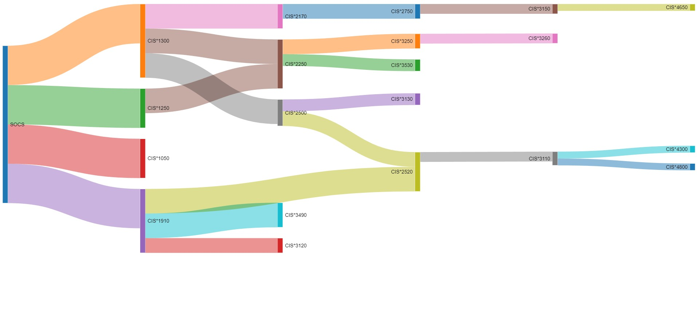

Introduction
This is my first entry in a series of work term reports as a Computer Science co-op student at the University of Guelph. In this report, I hope to share information about where I worked, what I did, my learning goals, the skills I developed, and other interesting aspects of my placement.
The Employer
For this work term, I had the privilege of working as a Data Analyst for the School of Computer Science at the University of Guelph. This opportunity was made possible through the President’s Summer Co-op Initiative.
My Role
As a Data Analyst, my primary task was to extract and analyze student flow data, which involved tracking the origins and course progression of students. The goal was to better understand the movement of students within CIS courses and aid in academic planning. This was especially important for the upcoming school year, as the university accepted a record number of approximately 7,000 students.
To achieve this, I was first tasked with creating multiple data visualization prototypes using different JavaScript libraries. I ended up creating three different prototypes: two using D3.js and one using Go.js. I also developed a Python script to generate sample data that closely matched the data the faculty had on hand. This was an interesting task, as it involved creating class and student data for multiple semesters, simulating student continuity to mimic actual student flow.
 
Next, I developed a Python program to parse the faculty’s CSV class data and extract useful metrics upon request. This involved creating a family of data structures to help organize the student and class data based on different terms.

The resulting data structure could be iterated and searched by various categories and requirements. Using a custom traversal algorithm, I was able to extract student flow data for each term and output it within another data structure. Additionally, options were created to follow specific student cohorts and list the information of individual students.
Unfortunately, due to the sheer scale of nodes within the data graph, it became impractical to visualize all the student flow data. I still added an option to output smaller-scale graphs, but even these were somewhat difficult to interpret. The following is an example of an entire term being visualized (the image is so large it had to be cropped).

Toward the end of the work term, I focused on identifying trends and other useful metrics within the class data. For example, I created a tool that allowed the user to create custom categories for students based on their programs. These categories could then be used to compare different student groups. Metrics such as class averages, student enrollment, pass rates, fail rates, etc., could be compared for different courses and terms over time. This was done using Matplotlib, an excellent tool for creating graphs.
Goals
The following are the learning goals I set during the work term:
- Improve my Python scripting skills: I aimed to improve my Python scripting skills by developing code that met the needs of my supervisor. I also utilized feedback from code reviews to learn what I could improve upon. Success was measured through feedback and tracking suggestions from my supervisor.
- Improve my oral and written communication skills: By participating in meetings, code reviews, and writing documentation, I planned to strengthen my communication skills. Success was measured through feedback and by comparing the quality of my documentation.
- Learn about data analysis and visualization techniques: I wanted to strengthen my skills through practice and problem-solving, creating practical applications for analyzing student data. Success was gauged by comparing the quality of work over time.
Reflections
I believe I achieved my goal of improving my Python skills and knowledge of the language. This is apparent through the progression of the project repository for the work term. Through practice and learning, I was able to deliver improvements to the code such as significant increases in processing speed, and additional features and methods for ease of use.
My communication skills improved by participating in code reviews with my supervisor and providing comprehensive project documentation. In addition, I practiced creating UML diagrams such as the ones in CIS*2430 to help convey the format of different data structures used within the project. I believe my documentation will help support the maintainability of the code and allow for future changes to be made.
Regarding data analysis, I learned a great deal by utilizing student records to create various graphs and document student flow. A great source of learning was encountering problems during development, and then creating solutions to those problems. For instance, I was able to learn about the significance of parsing records and creating code that can handle unexpected formats or information. Furthermore, another key takeaway was the importance of choosing a visualization format that will be able to support the scale and type of data that is to be displayed. Finally, I was also able to use the "matplotlib" Python library where I learned how to plot data and create graphs dynamically which I believe will be very useful in future roles.
Other Takeaways
Another thing I am thankful for is the opportunity to become familiar with different front-end JavaScript libraries such as D3.js and Go.js. Although I loved working with Matplotlib, I believe interactive visuals are a fantastic way of displaying data - especially when there are many aspects to the visual and the user wants to hone in on a particular one. Through the creation of different visualization prototypes I was exposed to these different frameworks/libraries and also got more practice with reading documentation and utilizing different APIs.
Conclusion
Overall, this was a great first co-op work term. It was very refreshing to build a project that I knew would see actual use and serve a purpose. In addition, this was a great experience to explore a different facet of computer science – data analysis. Before this term, I had no prior experience in data analysis, and this placement sparked my interest in the field. Furthermore, I also learned many invaluable skills and gained exposure to different technologies that will benefit my future career. It was also very rewarding to finally apply classroom concepts to a real-world position.
Acknowledgements
I want to thank Greg Klotz and Sarah Brennan for being great supervisors and mentors during the term. I also thank the Office of the President for the opportunity through the Summer Co-op Initiative, and the co-op staff and coordinators for their support.